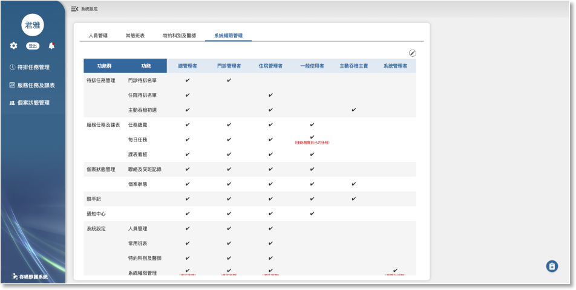
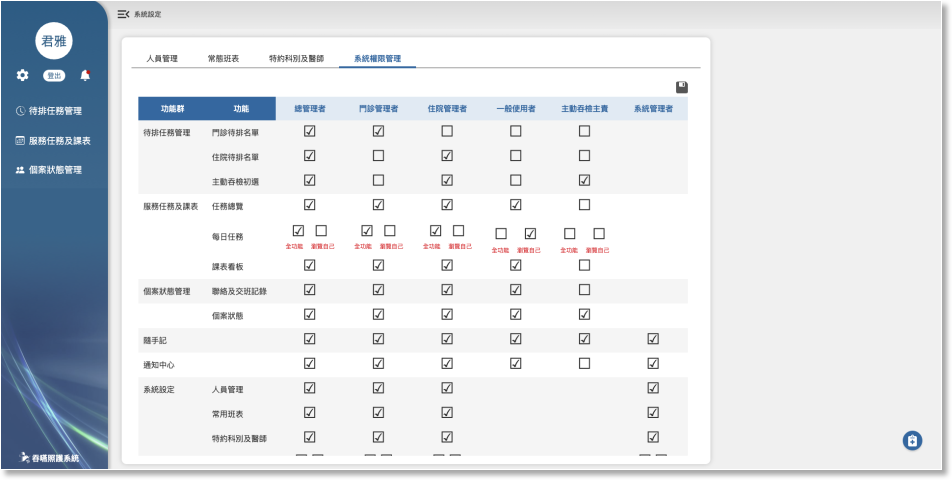

05-4 系統權限管理

功能
內容
說明
系統權限管理功能及相關連動規則
1. 此功能提供給所有管理者瀏覽，但只有總管理者可以編輯現有功能的權限，若有新增的功能需求，開發完成後，功能自動顯示在列表中，但必須填寫權限單才能由總管理者執行權限設定或變更。
2. 本系統各項功能的使用權限都依照這個管理介面的設定，若有新增功能需求，完成後自動在列表中新增項目。
管理權限
1. 總管理者
2. 門診管理者
3. 住院管理者
4. 一般使用者
5. 主動吞檢主責
6. 系統管理者
1. 總管理者：最大權限管理者，可使用全部系統功能(含可切換瀏覽每位治療師的每日任務)，除了系統管權限管理的編輯功能。
2. 門診管理者：可操作門診待排管理相關聯繫及派案功能(含可切換瀏覽每位治療師的每日任務)。
3. 住院管理者：可操作住院待排管理相關聯繫及派案功能(含可切換瀏覽每位治療師的每日任務)。
4. 一般使用者：不可使用待排任務管理相關操作及系統管理等功能，也不可以瀏覽每位治療師的每日任務。
5. 主動吞檢主責：可瀏覽主動吞檢功能，詳細說明請參照"特約科別及醫師”的設定。
6. 系統管理者：只開放給資訊單位人員申請。
功能
1. 待排任務管理
- 門診待排名單
- 住院待排名單
- 主動吞檢初選
2. 服務任務及課表
- 任務總覽
- 每日任務
- 課表看板
3. 個案狀態管理
- 聯絡及交班記錄
- 個案狀態
4. 隨手記
5. 通知中心
6. 系統設定
- 人員管理
- 常用班表
- 特約科別及醫師
- 系統權限管理
1. 每日任務：權限分為兩種，全功能及瀏覽自己。
2. 系統權限管理：權限分為兩種，瀏覽及編輯。
3. 除上述兩項功能外，其他功能只有可使用及不可使用(連瀏覽頁面的功能都沒有，左選單的該項目也不顯示)。
編輯
切換瀏覽及編輯畫面
此功能只開放給系統管理者使用，非系統管理者看不到編輯及儲存按鈕。
